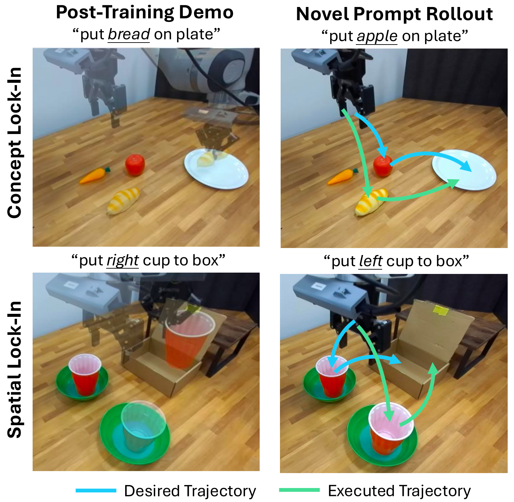
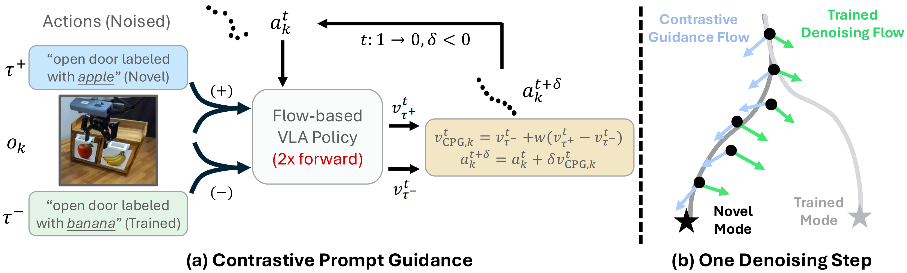
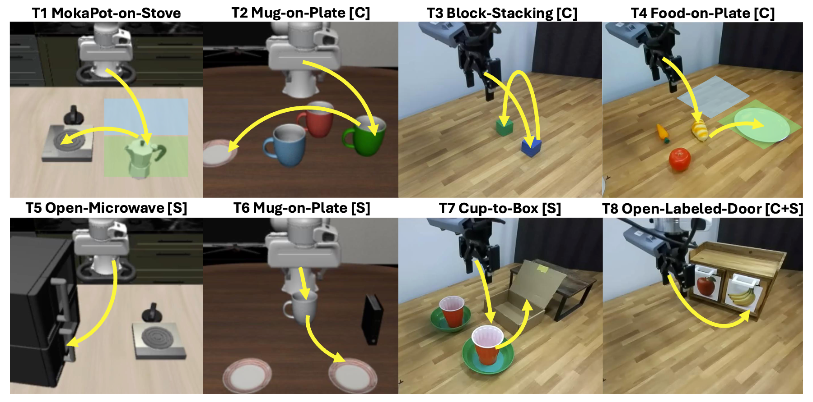
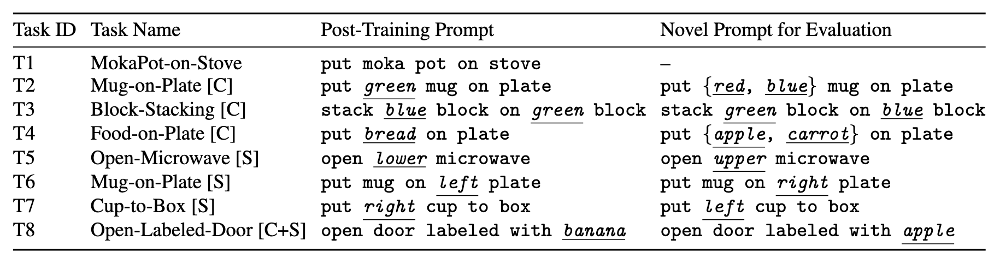

Have you ever post-trained a generalist vision-language-action (VLA) policy on a small demonstration dataset, only to find that it stops responding to new instructions and is limited to behaviors observed during post-training? We identify this phenomenon as lock-in: after low-data, supervised fine-tuning (SFT), the policy becomes overly specialized to the post-training data and fails to generalize to novel instructions, manifesting as concept lock-in (fixation on training objects/attributes) and spatial lock-in (fixation on training spatial targets). Many existing remedies introduce additional supervision signals, such as those derived from foundation models or auxiliary objectives, or rely on augmented datasets to recover generalization. In this paper, we show that the policy's internal pre-trained knowledge is sufficient: DeLock mitigates lock-in by preserving visual grounding during post-training and applying test-time contrastive prompt guidance to steer the policy's denoising dynamics according to novel instructions. Across eight simulation and real-world evaluations, DeLock consistently outperforms strong baselines and matches or exceeds the performance of a state-of-the-art generalist policy post-trained with substantially more curated demonstrations.
In low-data post-training, VLA policies can over-specialize to the training-demonstration distribution, becoming difficult to steer under novel prompts. We identify two forms of this failure: concept lock-in, where the policy fixates on training object identities or attributes regardless of the prompt (e.g., always picking "bread" even when instructed to pick "apple"), and spatial lock-in, where the policy remains anchored to training spatial targets regardless of the spatial instruction (e.g., always reaching for the "right cup" even when told "left cup").

DeLock combines two tightly coupled ingredients to preserve a generalist policy's generalization under narrow demonstrations:
Intuitively, CPG is related to negative-prompt guidance in image generation: instead of only suppressing an undesired concept, we contrast the novel prompt against the trained prompt to steer the policy away from post-training bias and toward the intended instruction. For a familiar example of negative-prompt guidance in image generation, see this example .

To systematically evaluate concept- and spatial-reasoning generalization under low-data post-training, we develop an 8-task evaluation suite spanning both simulation and real-world settings. Each task probes whether a post-trained policy can re-steer a learned skill when only the instruction changes.


Below we show DeLock's rollouts across all eight tasks. The policy was only post-trained on narrow demonstrations and has never seen these OOD object locations or OOD instructions during SFT. Despite this, DeLock successfully accomplishes these tasks at test time without additional training or supervision.
Trained Prompt: "put moka pot on stove"
(In-Distribution Location)
Trained Prompt: "put moka pot on stove"
(OOD Location)
Trained Prompt: "put green mug on plate"
Novel Prompt: "put red mug on plate"
Novel Prompt: "put blue mug on plate"
Trained Prompt: "open lower microwave"
Novel Prompt: "open upper microwave"
Trained Prompt: "put mug on left plate" (robot's left)
Novel Prompt: "put mug on right plate" (robot's right)
Trained Prompt: "put bread on plate"
(In-Distribution Location)
Trained Prompt: "put bread on plate"
(OOD Location)
Trained Prompt: "put bread on plate"
Novel Prompt: "put apple on plate"
Novel Prompt: "put carrot on plate"
Trained Prompt: "stack blue block on green block"
Novel Prompt: "stack green block on blue block"
Trained Prompt: "put right cup to box" (robot's right)
Novel Prompt: "put left cup to box" (robot's left)
Trained Prompt: "open door labeled with banana"
Novel Prompt: "open door labeled with apple"
@misc{huang2026breakinglockin,
title={Breaking Lock-In: Preserving Steerability under Low-Data VLA Post-Training},
author={Suning Huang and Jiaqi Shao and Ke Wang and Qianzhong Chen and Jiankai Sun and Yanjiang Guo and Mac Schwager and Jeannette Bohg},
year={2026},
eprint={2604.23121},
archivePrefix={arXiv},
primaryClass={cs.RO},
url={https://arxiv.org/abs/2604.23121},
}